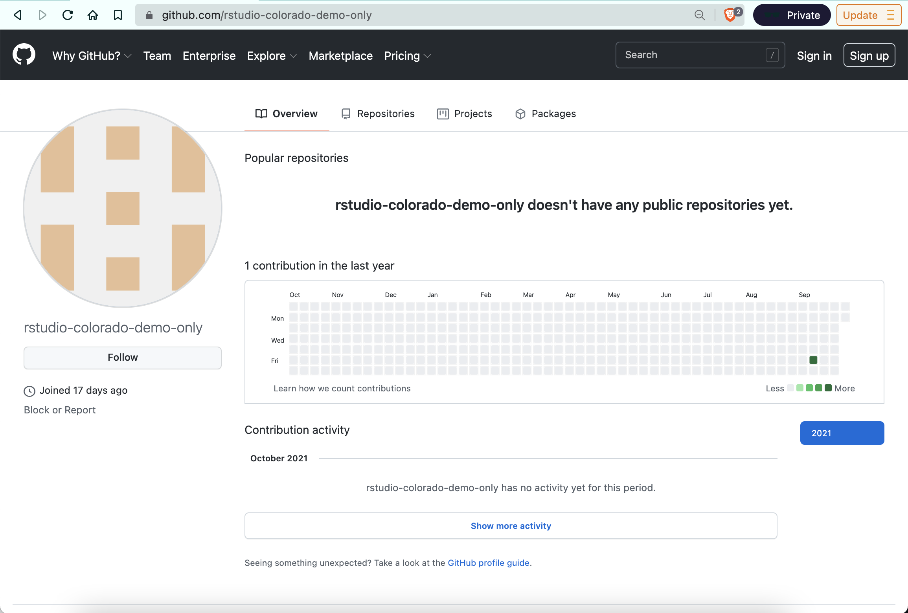
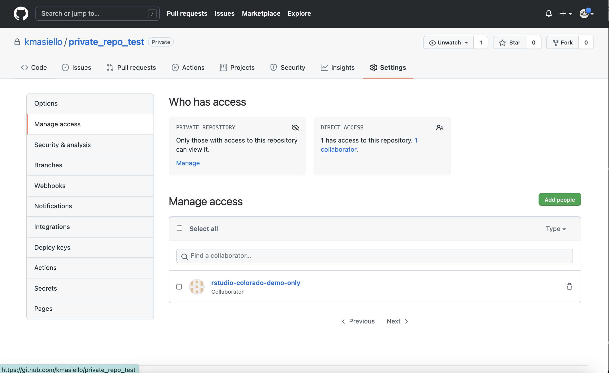
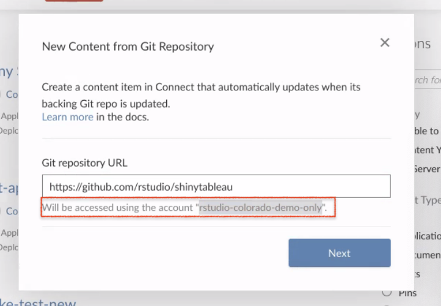

Git-backed publishing from a private repo
Q: Can I use git-backed publishing if my repo is private?
A: Yes, just use a service account. Reference this section of the Admin Guide:
https://docs.rstudio.com/connect/admin/content-management/git-backed/#private-repos
Here’s what it looks like using GitHub1
1. Create a service account on your git host
Example: the “rstudio-colorado-demo-only” service account

An admin or someone responsible should own the service account because they will need to accept share requests coming from private repos (this happens in step 5)
2. Create a GitHub PAT (Personal Access Token) for this service account
Scope the permissions to allow it to see repos
3. Update the Connect .gcfg file to provide the credentials for the service account
Example:
[GitCredential "GitHub"]
Host = "github.com"
Username = "my_username"
Password = my-encrypted-password
Protocol = "https"The password is the PAT.
4. Invite the service account to be a collaborator on your private repo (read access minimum)

5. Service account owner has to accept invitation!

If the admin has not accepted the share request, import from git won’t be able to find the repo. This could be different for other git hosts (GitLab, Azure DevOps, etc.), but GitHub users can’t automatically accept collaboration request
6. Select git-backed publishing from RStudio Connect
Note that once a service account is defined in the .gcfg file, this will be the account used to access all content. See highlighted text: 
Additional Points
If you had multiple git hosts, you would enter them sequentially:
[GitCredential "GitHub"] Host = "github.com" Username = "my_username" Password = my-encrypted-password Protocol = "https" [GitCredential "BitBucket"] Host = "bitbucket.org" Username = "my_bitbucket_username" Password = my-encrypted-password Protocol = "https"The name after
GitCredentialis just a user-defined shortname.You can only have one service account for each host.
Footnotes
This may look different for GitLab, Azure DevOps, or other git hosts↩︎